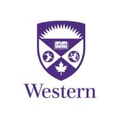
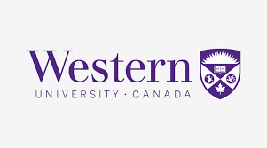

Pincan Zhao
Postdoctoral Associate, Ph.D., IEEE Member
Department of Electrical and Computer Engineering
1151 Richmond Street
London, Ontario, Canada, N6A 3K7
Email: pincan.zhao@uwo.ca

|
Pincan Zhao Postdoctoral Associate, Ph.D., IEEE Member Department of Electrical and Computer Engineering 1151 Richmond Street London, Ontario, Canada, N6A 3K7 Email: pincan.zhao@uwo.ca |
|
|  |  |
Last Updated: Feb. 2026